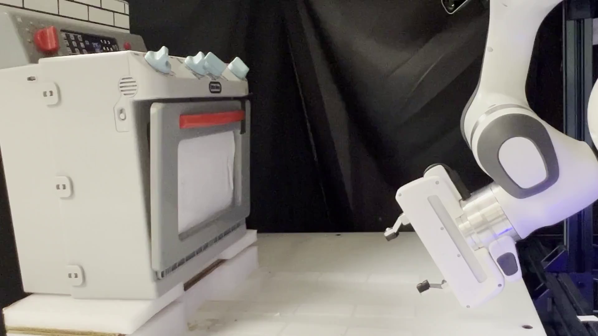

Drawer
Real Lounge/Kitchen/Offices
We test ArticuBot in loungs/kitchen/offices on 7 unseen real-world articulated objects (a single policy) with a X-Arm on a mobile base. We use 2 Azure Kinects as the cameras. We test with the original X-Arm gripper, and also the UMI gripper. Videos are 5x speed.
Fridge
cabinet
Cabinet wtih thin handle
Drawer 2
Drawer 3
Dishwasher (early stop due to excessive force)
Real-World Lab A Test objects
We also test ArticuBot (the same policy) on 9 unseen real-world articulated objects with a table-top Franka Arm, and two Azure Kinects cameras in Lab A. Videos are 5x speed.
3-layer cabinet
knob cabinet
2-layer drawer
red microwave
white cabinet
black microwave
toy fridge
toy oven
knob drawer
Real World Lab B Test objects
We also test ArticuBot (the same policy as used in above experiments) on 4 unseen real-world articulated objects with a table-top Franka Arm, and two RealSense D435i cameras in Lab B. Videos are 5x speed.
Green cabinet
Green cabinet (flipped)
Brown storage box
Red strorage box
Drawer (bottom)
Drawer (top)
Visualizations of the learned policy outputs
Please click an image below to view the visualizations of the policy outputs.

Comparison to prior methods in the real world
We compare to FlowBot3D and AO-Grasp on 9 objects in lab A. As AO-Grasp only performs grasping, we compare against it in terms of grasping success rate. As FlowBot3D originally uses a suction gripper for grasping, when comparing to FlowBot3D, we manually move the parallel jaw gripper to first grasp the handle of the object, then apply FlowBot3D to open it. We compare against it in terms of normalized opening performance. We also compare to OpenVLA, which we find to fail to grasp or open any of the test objects.

Comparison to prior articulated object manipulation methods
Comparison to non-hierarchical policy
We compare ArticuBot, which uses a hierarchical policy, to a non-hierarchical policy, that learns to output eef end-effector delta transformations without conditioned on a learned predicted eef goal. We compare in terms of the normalized opening performance, when trained with different number of objects in simulation. As shown, using a hierarchical policy significantly outperforms the non-hierarchical policy. Increasing the number of training objects do not bring much improvement for the non-hierarchical policy.

Comparison of hierarchical and non-hierarchical policy.
Comparison of different high-level policy architecture
We compare the weighted displacement model, which is the high-level policy used by ArticuBot, to several other methods for predicting the goal eef points: DP3 (wtih the default UNet diffusion), DP3 (using a transformer for diffusion), and 3D Diffuser Actor (3DDA). These baselines directly diffuse the goal eef points, instead of predicting the displacement from the scene points to the goal eef points. The proposed weighted displacement model outperforms these baselines especially when tested with unseen camera randomizations, which is crucial for sim2real transfer.

Comparison of different high-level policies. Leftmost: Train and test without camera randomizations. Right: Train with camera randomizations, and test with no camera randomization, with camera randomizations from training distribution, and with camera randomizations from an unseen test distribution.
Acknowledgement
This material is based upon work supported by the Toyota Research Institute, National Science Foundation under NSF CAREER Grant No. IIS-2046491, and NIST under Grant No. 70NANB24H314. Any opinions, findings, and conclusions or recommendations expressed in this material are those of the author(s) and do not necessarily reflect the views of Toyota Research Institute, National Science Foundation, or NIST.BibTeX
@inproceedings{Wang2025articubot,
title={ArticuBot: Learning Universal Articulated Object Manipulation Policy via Large Scale Simulation},
author={Wang, Yufei and Wang, Ziyu and Nakura, Mino and Bhowal, Pratik and Kuo, Chia-Liang and Chen, Yi-Ting and Erickson, Zackory and Held, David},
booktitle={Robotics: Science and Systems (RSS)},
year={2025}}